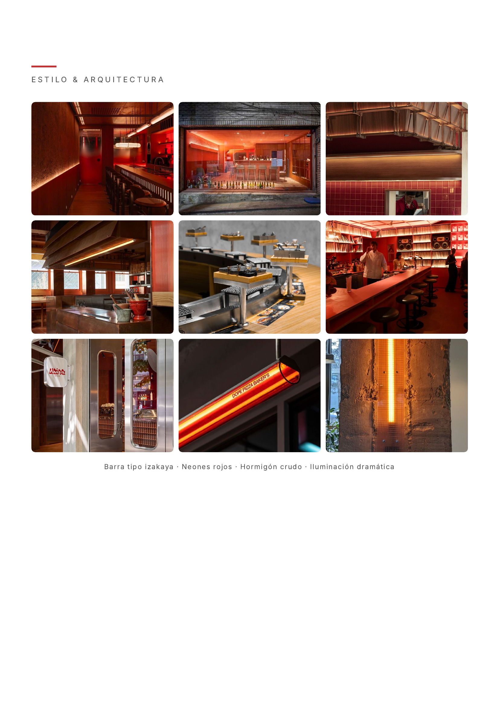
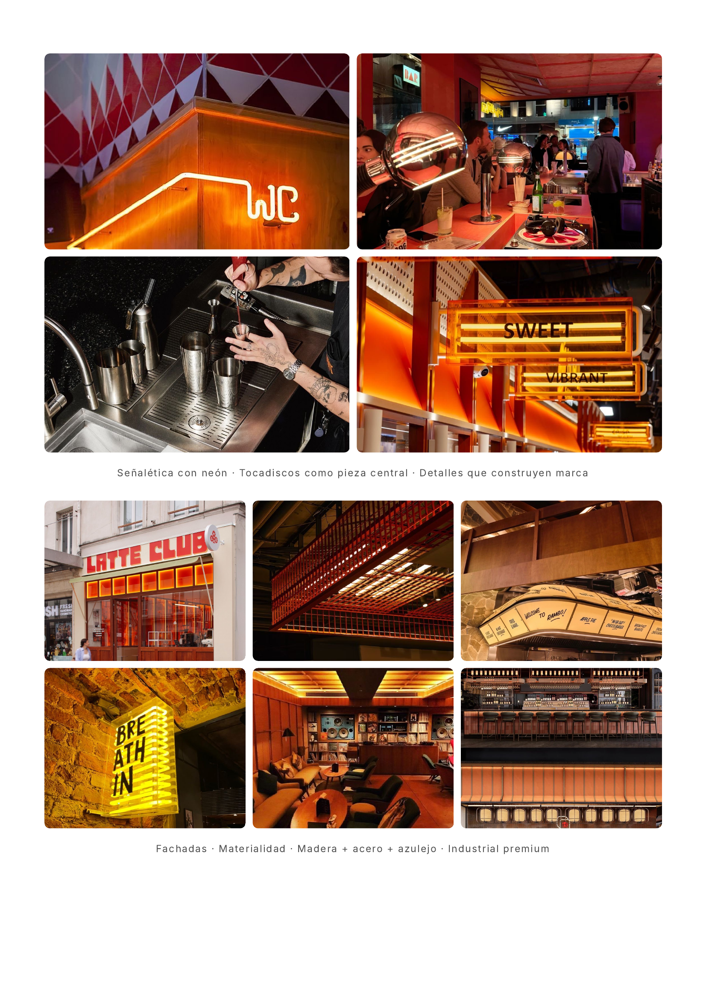
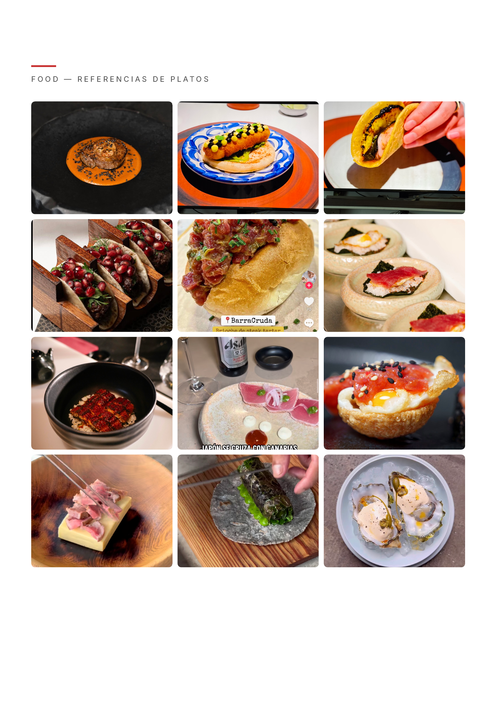
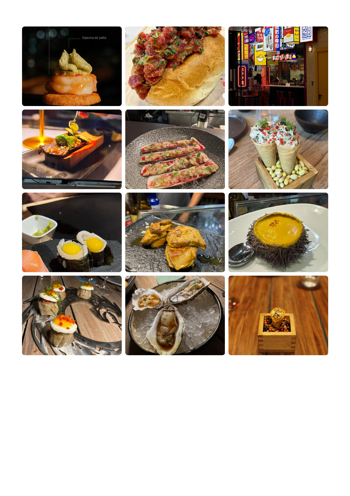

La cocina es de alta gama. A pesar de una imagen callejera e informal, cada plato tiene detrás técnica de autor, ingredientes premium y presentación impecable. Es cocina de autor sin la solemnidad del fine dining. Street food sin la precariedad del puesto callejero.
En una Buenos Aires saturada de propuestas gastronómicas minimalistas, Snackz propone lo opuesto — una marca fuerte, ruidosa, con personalidad propia. Un lugar donde la experiencia, la comida y la marca son inseparables.




Un socio con visión de negocio, números y marca. Otro con la operación gastronómica, experiencia sectorial y red de contactos. Ambos capaces de intervenir en cualquier área — las cualidades descritas no son roles fijos sino fortalezas individuales.
| Encargado | 1 |
| Cajero | 1 |
| Recepción | 1 |
| Bachero | 1 |
| Barman | 1 |
| Cocineros | 5 (1 cada 7 comensales) |
| Apoyo | 2 |
| Total por turno | 12 personas |
Algunos días definidos (baja demanda) se ofrece un menú degustación por reserva. Doble propósito: fomenta los días bajos y genera un producto premium adicional.
| Core: 30-50 | Les gusta la buena cocina, valoran los sabores. Buscan lifestyle, lo no tradicional. Les divierte lo disruptivo. Poder adquisitivo medio-alto / alto. |
| Secundario: +50 | Buscan la experiencia gastronómica top y la disrupción del formato. Valoran la calidad del producto y la cocina en vivo. |
| Contexto | Buenos Aires tiene mucha oferta gastronómica buena. Snackz se diferencia por la combinación de marca fuerte + cocina de autor + experiencia inmersiva. |
| Nombre | Definido | Snackz Izakaya |
| Concepto | Definido | Alta cocina callejera japonesa fusión |
| Socios | Definido | Marcos + Ramón, perfiles complementarios |
| Formato | Definido | Barra, cocina en vivo, sin mozos, 35 personas |
| Ticket | Definido | USD 42 por persona (comida + bebida) |
| Refs visuales | Definido | Moodboard de estilo, arquitectura y comida |
| Plan financiero | Definido | P&L, escenarios, retorno inversor (ver págs siguientes) |
| Local | Pendiente | Buscando 150m², posibilidad subsuelo |
| Inversión total | Pendiente | Estimado USD 235K. Evaluando crédito vs socio capitalista |
| Carta definitiva | Pendiente | Dirección clara, desarrollo en curso |
| Identidad visual | Pendiente | Referencias definidas, falta cerrar brand book |
Snackz Izakaya proyecta un revenue bruto de $57K/mes (USD) operando solo turno cena, martes a domingo, con 35 lugares en formato barra. Con un EBITDA margin del 32% y un net margin real del 20.3%, el negocio genera $12.1K/mes de resultado neto después de todos los impuestos. El inversor recupera su capital en el mes 24.
| Mensual | Anual | % Rev | |
|---|---|---|---|
| REVENUE | |||
| Covers / mes | 1,386 | 16,632 | |
| Ticket promedio | $42 | ||
| Revenue Bruto | $57,000 | $684,000 | 100% |
| Blanco (80%) | $47,040 | $564,480 | 82.5% |
| Negro (20%) | $9,960 | $119,520 | 17.5% |
| COSTO MERCADERÍA | |||
| Food Cost (25%) | -$14,250 | -$171,000 | 25.0% |
| Paper Cost (2.5%) | -$1,425 | -$17,100 | 2.5% |
| Gross Profit | $41,325 | $495,900 | 72.5% |
| GASTOS OPERATIVOS | |||
| Crew Labor (12 × $1,150) | -$13,800 | -$165,600 | 24.2% |
| Alquiler + Servicios | -$4,300 | -$51,600 | 7.5% |
| OPEX + Marketing (5%) | -$2,850 | -$34,200 | 5.0% |
| Processing + SG&A | -$1,506 | -$18,067 | 2.6% |
| EBITDA | $18,869 | $226,433 | 32.0% |
| IMPUESTOS | |||
| IVA neto | -$2,100 | -$25,200 | |
| IIBB + Déb/Créd | -$2,211 | -$26,531 | |
| Imp. Ganancias | -$2,050 | -$24,600 | |
| Costo fact. extra | -$434 | -$5,207 | |
| Resultado Neto Real | $12,074 | $144,888 | 20.3% |
633 covers/mes
vs 1,386 actuales (margen 54%)
51.7%
Benchmark: <60%
24.2%
Benchmark: 25-33%
Hasta que el inversor recupere los $235K, se lleva el 80% de las ganancias. Después del payback (mes 24), el split pasa a 25% a perpetuidad.
| Inversor cobra | vs Inversión | Operador cobra | |
|---|---|---|---|
| Año 1 | $118,400 | -$116,600 | $29,600 |
| Año 2 | $236,800 | +$1,800 | $59,200 |
| Año 3 | $273,000 | +$38,000 | $167,400 |
| Año 4 | $309,200 | +$74,200 | $275,600 |
| Año 5 | $345,400 | +$110,400 | $383,800 |
Invierte $235K. Cobra $345K. Ganancia: $110K. Múltiplo: 1.47x. Post-payback cobra ~$3K/mes.
Sin capital propio. Cobra $384K en 5 años. Pre-payback: ~$2.5K/mes. Post-payback: ~$9K/mes.
Lo que pasa de verdad y lo que ve AFIP.
Proyección con payback y split.
Retorno, múltiplo, ROI.
Unit economics, break-even.
Pesimista a muy optimista.
Iniciativas con impacto simulado.